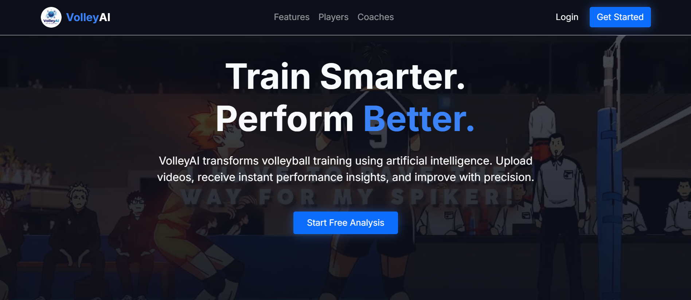

About Me

Hello! My name is Mark Angelo Lasala, and I am a college student passionate about technology and innovation. Currently pursuing a degree in INFORMATION TECHNOLOGY MAJOR IN PROGRAMMING, I am eager to explore opportunities that allow me to grow and make a meaningful impact in my field. I am developing skills in software development, database management, and creating user-friendly web applications. I enjoy taking on new challenges to expand my knowledge and improve my expertise. Whether it's building dynamic websites, solving coding problems, or learning new programming languages, I approach everything I do with enthusiasm and determination. In my free time, you can find me playing mobile games. I believe in lifelong learning, collaboration, and the power of technology to transform lives. I aim to apply these values in my studies and future career. I look forward to connecting with like-minded individuals and contributing to projects that inspire innovation and growth.
Personal Details
- Name: Mark Angelo Lasala
- Location: Nahulid, Libagon Southern Leyte
- Email: Markpetpet0827@gmail.com
- Phone: 09532214110
Skills
Education
Bachelor of Science Information Technology Major in PROGRAMMING
SLSU Bontoc (Southern Leyte State University - Bontoc Campus)
Works
Capstone Project:VolleyAI; REAL-TIME VOLLEYBALL POSE ESTIMATION AND PERFORMANCE ANALYSIS USING MACHINE LEARNING

This is my official Capstone Project developed at SLSU Bontoc. VolleyAI is a web-based volleyball performance analysis system that uses computer vision and artificial intelligence to evaluate player movements. The system allows athletes to upload volleyball training videos, automatically analyzes body poses and actions, and generates quantitative performance scores and AI-based feedback. Coaches can review sessions, assign drills, and provide manual feedback, enabling data-driven training and continuous performance improvement.
View Capstone ProjectBargo POS

A Bargo POS is a point-of-sale system designed to streamline sales, inventory, and customer management for businesses, offering features like real-time reporting, user-friendly interfaces, and support for various payment methods.
GitHub Link(Document Tracking System) Procurement

The Document Tracking System for Procurement is a digital tool used to monitor, manage, and track procurement-related documents, ensuring transparency, accountability, and efficient workflow throughout the procurement process.
Lost and Found

The Lost and Found system is a platform used to record, track, and manage lost or recovered items, helping individuals report missing belongings and facilitating their return through organized documentation and retrieval processes.